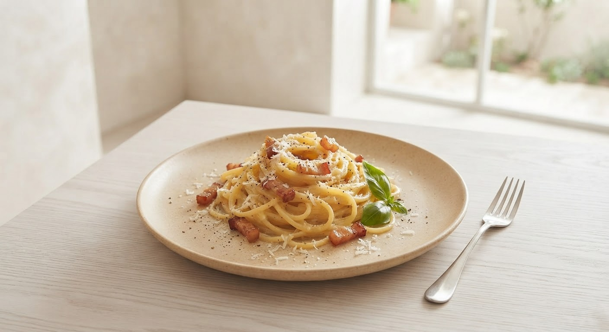

一期一会の美食体験
岩手・花巻の旬を綴る、
一日二組だけの贅。
Badalone Premium Dining
岩手・花巻の旬を綴る、
一日二組だけの贅。
Badalone Premium Dining
昼・夜 各一組〜二組限定のご案内
※旬の食材のみを使用するため、前日までのご予約をお願いしております。
ご注文時にこの画面をスタッフへご提示いただいた方へ、ディナーコースの始まりに相応しい
「岩手の地酒または希少ワイン1杯」をサービスいたします。
※ご入店時またはご注文時に、スタッフへこちらの画面をお見せください。

白金豚の甘み、三陸の潮風、
そして農家が手塩にかけた旬野菜。
素材が教える「一番の食べ方」を
一皿ずつ、丁寧に、真っ直ぐに。
Craftsmanship
東京のイタリアンで研鑽を積み、2013年独立。化学専攻の背景を持つ彼が追求するのは、素材のポテンシャルを極限まで高める「調理の最適解」。岩手の地で、東京の感性と地元の魅力を融合させます。
日本ソムリエ協会岩手支部副支部長。社会福祉・心理学の視点を取り入れた接客は、心地よい間と専門的な提案を両立。岩手の地酒やナチュラルワインから、お客様の好みに沿った最高の一杯を導き出します。
「地産地消にこだわり、食材の生産農家へ注文をせず、勧めてもらった物を受け入れる…食の一期一会がヒトサラ毎に表現されていました。味付けも洗練されていて、申し分なしでした。」
— 50代 男性
「入籍日のお祝いとして利用。岩手の食を堪能できるコースはどれも美味しく、食材のお話もお聞きできて素敵な時間を過ごせました。花巻にこんなに素敵な場所がある事がとても嬉しいです。」
— 30代 女性
「食材にこだわりを感じ、店の雰囲気も良い。シェフはシャイで気さくな人で料理を愛しているのが伝わりました。カボチャニョッキと短角牛、白金豚の粕漬けベーコンが特に良かったです。」
— 40代 カップル
より深く食材と出逢い、物語を味わっていただくための新しい取り組み
店内にひっそりと掲示されるストーリーポップ。岩手の風土が育んだ一皿の素材について、生産者様の人柄やこだわり、その日の食材が届くまでの背景を写真と言葉で紐解きます。お料理を待つ時間も、豊かな対話へと変えていきます。
コース料理をお召し上がりになるテーブルには、その日のメニューと共にシェフからのメッセージカードを添えて。本日お届けするコースのテーマや、ペアリングの意図、岩手の季節の切り取り方を一筆認めてお届けいたします。
誕生日、結婚記念日、特別な御祝い…。
ご予約時にその旨をお伝えいただいたお客様には、
シェフ特製の「アニバーサリー・ドルチェプレート」を
無料にてご用意させていただきます。
花巻の静寂の中で、記憶に残るひとときを。

Badalone (バダローネ)
〒025-0092 岩手県花巻市大通り1丁目5-12
昼：1組（12:00〜） / 夜：1〜2組（18:00〜22:00）
完全予約制 / 水曜定休